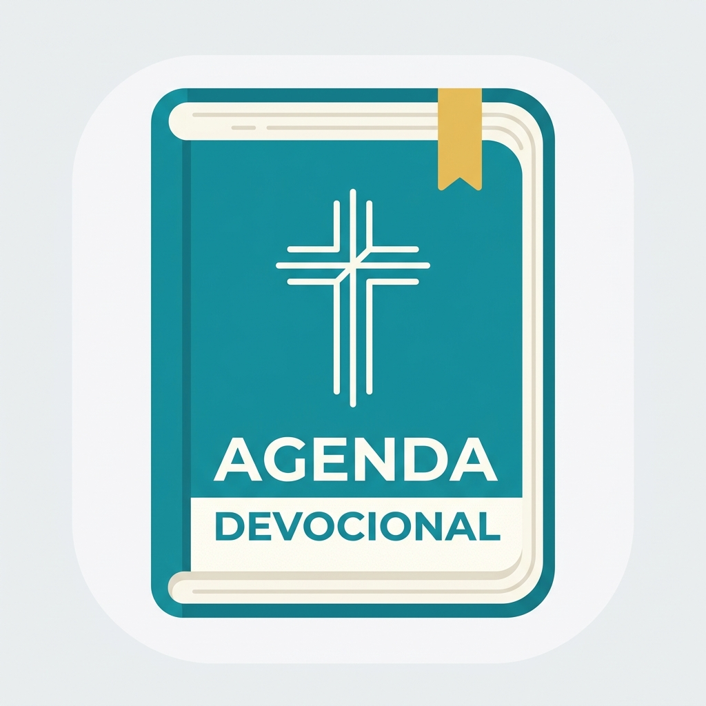

Agenda DevocionalUma experiência devocional intimista e completa no seu celular. Registre suas anotações, grave áudios e acompanhe sua assiduidade espiritual.
"Lâmpada para os meus pés é tua palavra e luz, para o meu caminho."
Salmo 119:105
A Palavra de Deus serve como nosso guia diário nos momentos de escuridão e dúvida. Que hoje você se permita ser iluminado pela Sua verdade eterna.
Muito mais do que um leitor de versículos. Um espaço elegante para documentar sua caminhada de fé.
Uma palavra inspiradora selecionada para cada dia do ano, disponível em múltiplos idiomas e traduções bíblicas.
Grave suas orações e reflexões faladas diretamente no dia, com suporte a áudio estendido para meditações mais profundas.
Escreva pensamentos e crie uma linha do tempo organizada para rever suas decisões e compromissos diários.
Acompanhe suas sequências de leitura diária e visualize estatísticas mensais e anuais de comunhão.
Seus dados salvos de forma segura na sua conta Google. Restaure ou mescle suas anotações sempre que precisar.
Escolha o seu estilo preferido de cores (Ouro Imperial, Oliva, Real, Vinho) e ajuste o tamanho das fontes para leitura confortável.
Carregando data...
"Buscai ao Senhor enquanto se pode achar, invocai-o enquanto está perto."
Isaías 55:6
Deus está sempre acessível àqueles que o buscam de coração sincero. Dedique alguns minutos do seu dia de hoje para clamar pela presença do Pai em suas decisões.
Baixe agora e comece a registrar suas anotações e momentos com Deus hoje mesmo. Disponível gratuitamente.